“Successful” is not the end
Today’s apps end the flow on “İşlem başarılı” (Transaction successful). For the user, that is exactly where the worry starts: has the money reached the other account?
Case study 05 · November 2026 · Mobile banking
A money-transfer flow for a fictional digital bank, rebuilt around the question people still ask after they tap Send: did the money actually arrive?
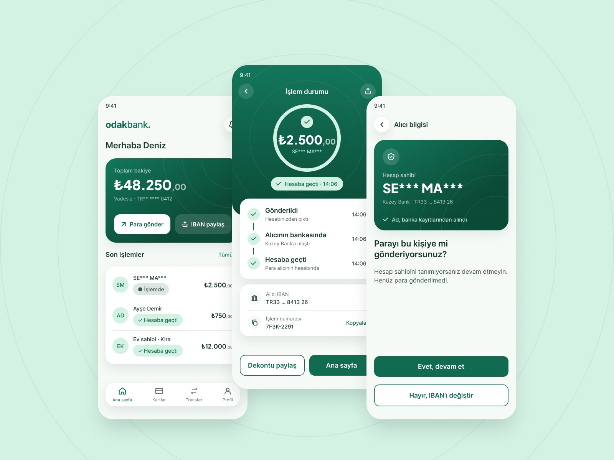
The interface is in Turkish; translations are in brackets.
Today’s apps end the flow on “İşlem başarılı” (Transaction successful). For the user, that is exactly where the worry starts: has the money reached the other account?
31 of 50 complaints happen after the money has been sent. People leave the app to check: they message the recipient, call the bank or open the other bank’s app.
Show where the money is at every step, explain failures in plain language, and let people stop a mistake before it costs them.
There is little public data on how people feel after a transfer, so I went where they write about it.
I collected 50 recent complaints about money transfers on Şikâyetvar, Turkey’s largest public complaint site, across 19 banks and fintech apps, and coded each one by journey stage and theme.
31 after sending · 14 during · 5 before
Red tags count complaints at each step of today’s flow (A). Green tags show which theme each new step answers (B).
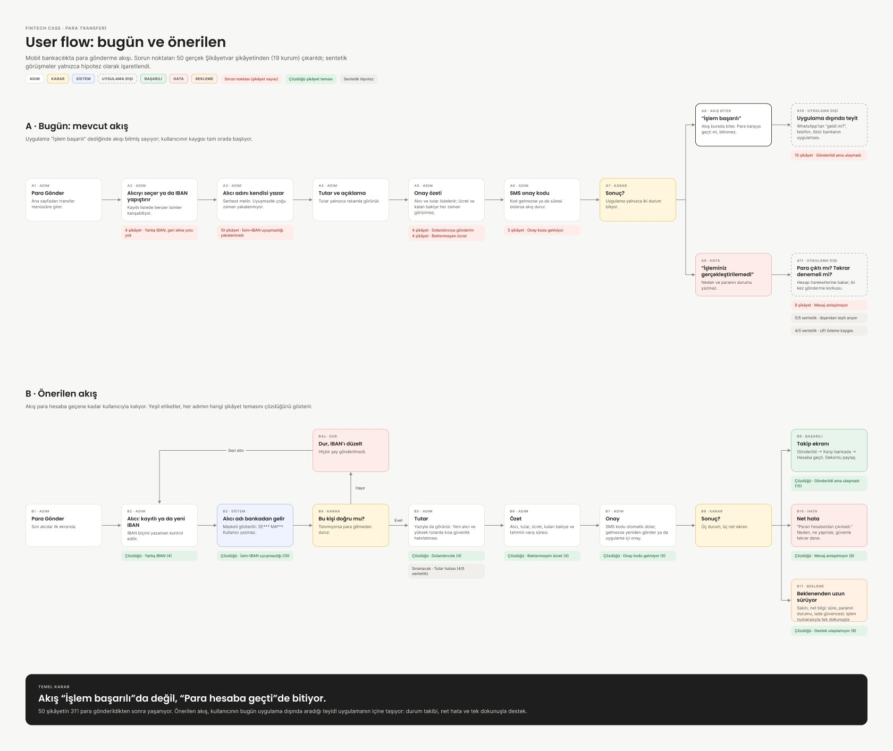
Each screen answers a complaint theme.
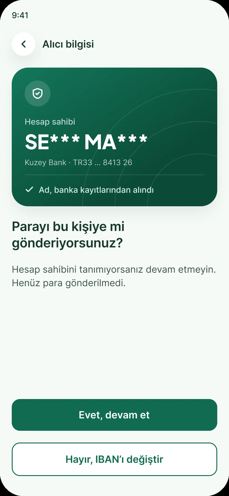
Instead of typing a name that is never checked, the user sees the masked name from bank records and confirms it. “No” stops the flow before any money moves.
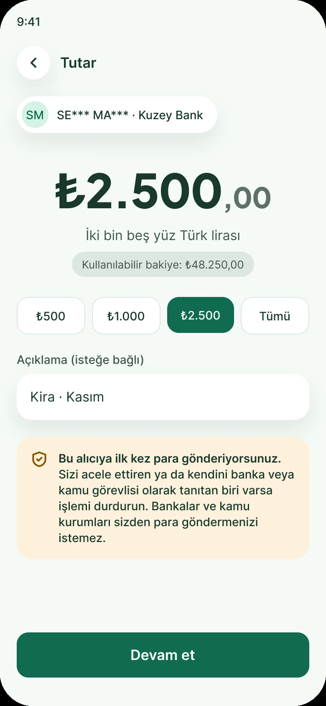
First-time payees trigger one calm note about the most common scam in Turkey: someone posing as a bank or public official. It stays off routine transfers, so it isn’t ignored.
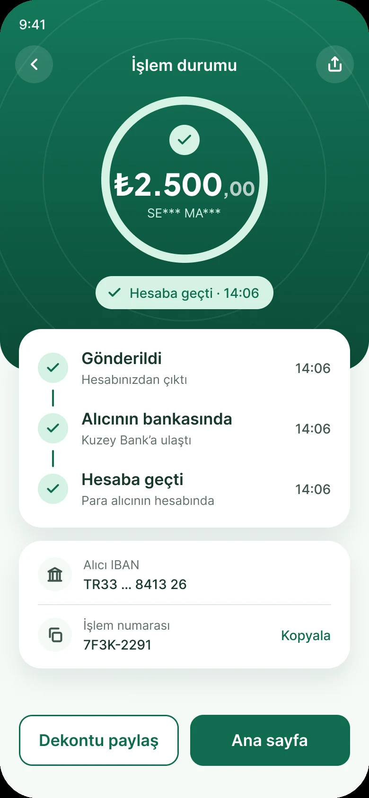
Sent, at the recipient’s bank, in the account: three steps with timestamps. On a FAST transfer the ring fills in seconds and the receipt can be shared right away.
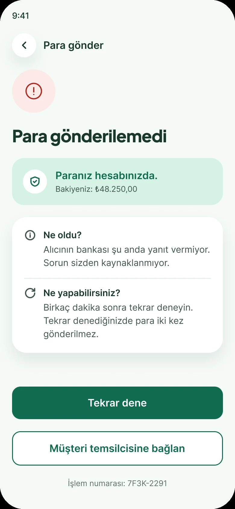
The first line answers the real question: “Paranız hesabınızda” (Your money is in your account). Then what happened, what to do, and a retry that can’t send twice.
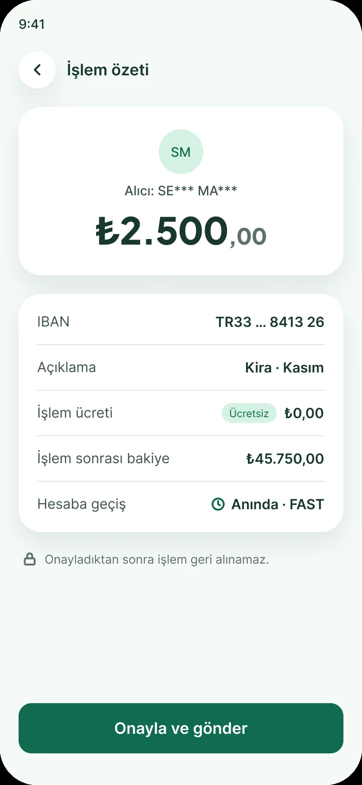
Fee, balance after the transfer and how fast it lands (“Anında · FAST”, Instant) are all visible before the user commits.
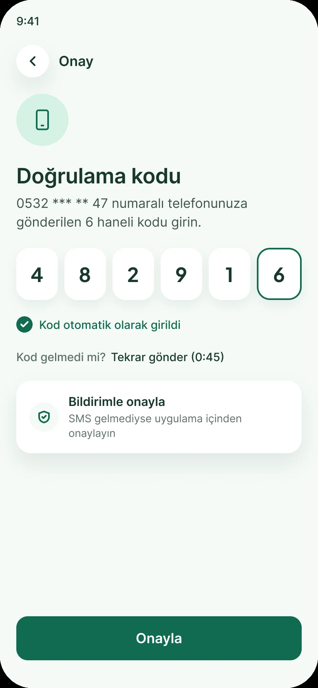
SMS autofill, a visible resend timer and an in-app approval fallback, if regulation allows it.
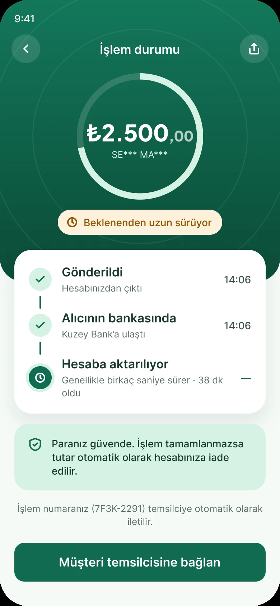
When a transfer takes longer than usual, the screen says how long it has been, that the money is safe and that it is refunded if it doesn’t land.
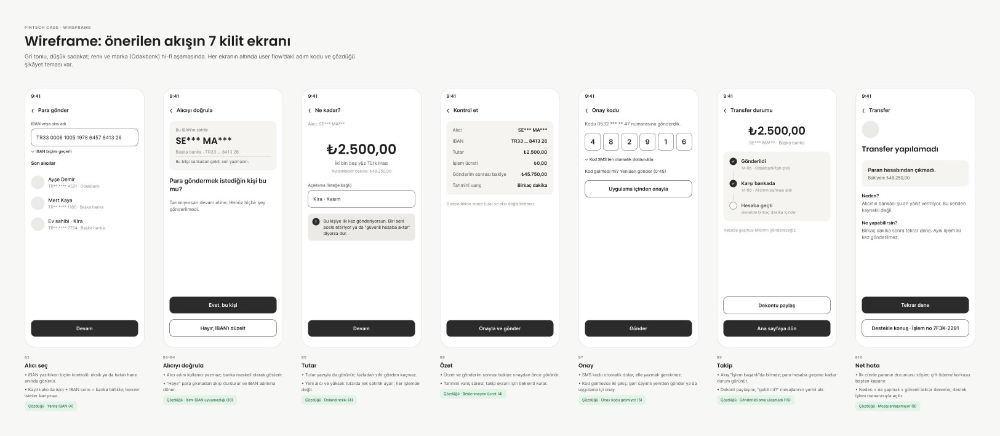
Seven greyscale screens, each tagged with its step in the flow and the complaint it answers, so every element had to earn its place.
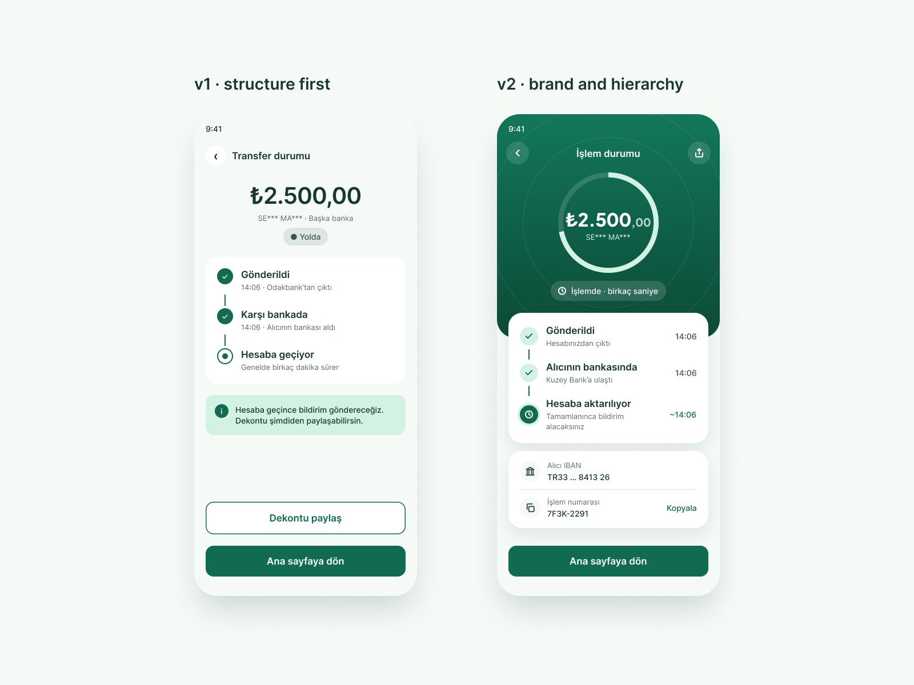
v1 got the flow right but looked generic: text characters for icons, one card style, no brand moment. v2 adds a real icon set, a display face for numbers and depth, and turns the tracker into the hero screen.
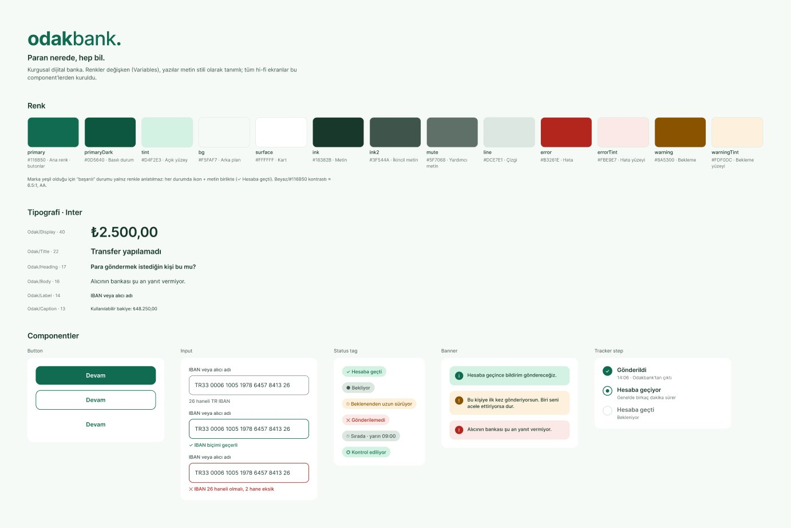
13 colour variables, 6 text styles and 5 component sets. Because the brand is green, success is never shown by colour alone: every status pairs an icon with text.
In a money app, one word can cause panic. I reviewed every string for tone, accuracy and Turkish banking conventions.
The first version of the slow-transfer screen said “Gecikiyor”. Looking at it as a user, I would have panicked, so I rewrote it, and then the rest.
“Delayed” reads as “something is wrong”. The new label says what is happening and sits next to a promise that the money is safe.
Turkish banks address customers formally. The informal voice made a money app feel careless.
Says exactly what was checked: the user didn’t type this name.
FAST transfers land in seconds. A vague estimate created worry that wasn’t needed.
“Asking for money” sounds blunt in Turkish. Sharing a correct IBAN also prevents wrong-IBAN mistakes from the recipient’s side.
Send ₺2.500 from the home screen. The tracker fills on its own when the money lands.
What I would test and design before handing this to a team.
Send rent to a new recipient, read the tracker, react to the error screen. Measured: task success, hesitation on the verify step and a 1–5 confidence score.
Confirm whether in-app approval can replace, or only add to, SMS confirmation under BDDK rules.
Design the queued state for transfers outside FAST limits or hours, such as “Sırada · yarın 09:00” (Queued · tomorrow 09:00).
Design “IBAN paylaş” so the person receiving money can share a correct IBAN in one tap.